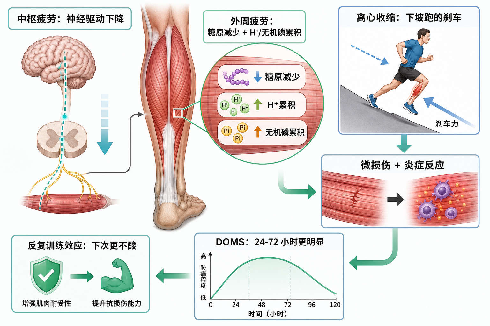

Day 37 · 疲劳与延迟性肌肉酸痛
今日主题：分清“当下没力”与“隔天才酸”，才能安排下一次训练。
一句话总结
疲劳像油门与发动机暂时都受限：大脑的驱动变小，肌肉的燃料与化学环境也变差；DOMS 则像离心“刹车”后的延迟维修反应，不是乳酸留在肌肉里。

核心要点 · 点开看透
- 疲劳不是一个开关，而是中枢与外周共同限制输出。底层机制
中枢指大脑到运动神经元的“油门”变小；外周指神经信号到达肌肉后，肌肉本身暂时交不出同样的力。
训练含义同一重量突然变慢，不必立刻归因于意志力差。睡眠、压力和组间恢复都会影响两个环节。
- 中枢疲劳是神经驱动下降，像油门踏板没能踩到底。字面意思
神经驱动是中枢神经系统向运动单位发出的募集和放电指令。长时间高强度工作、睡眠不足等可改变 5-HT 等神经递质环境，使指令变弱。
真实例子深蹲动作仍稳定，但明明还有肌肉容量，发力意愿和爆发感已明显下降。
常见误解❌“中枢疲劳就是大脑坏了”。✅它通常是可恢复的保护性调节，不等于结构损伤。
- 外周疲劳发生在肌肉端：燃料减少，局部化学环境变难发力。底层机制
糖原是肌肉快速使用的碳水燃料仓；高重复训练会消耗它。氢离子 H⁺ 与无机磷累积会干扰钙离子处理和横桥工作，像发动机里燃料少、火花塞也不顺。
训练含义高次数腿部训练后局部灼烧、速度掉得快，常更多来自外周限制；合理休息与补充碳水比硬顶更能保住动作质量。
- DOMS是延迟性肌肉酸痛，通常在 24-72 小时更明显。字面意思
DOMS = Delayed Onset Muscle Soreness，意思是“延后出现的肌肉酸痛”。它不一定在训练结束时出现，常在第二天或第三天爬楼、坐下时最明显。
训练含义酸痛程度不能直接代表增肌效果；评估训练效果更该看技术、渐进负荷和长期恢复。
- 离心收缩是 DOMS 的重要诱因，下坡跑像反复踩刹车。真实例子
下坡时股四头肌与小腿肌在被拉长的同时仍要产生张力来减速，这就是离心收缩。它比平地跑更容易带来新奇的机械应力。
为什么影响训练初次加入慢速下放、负重下坡或陌生动作时，先控制总量；否则 DOMS 可能妨碍下一次高质量训练。
- 微损伤 + 炎症反应解释 DOMS，但不等于“练伤了”。底层机制
新奇离心负荷会造成微观结构扰动，随后出现局部炎症信号与敏感性提高，因此按压、伸展或下楼会痛。正常 DOMS 多为双侧、可预测、逐日缓解。
警报线单点锐痛、肿胀明显、无力加重、麻木或疼痛持续恶化，不应当作普通酸痛，应暂停并寻求专业评估。
- 反复 bout 效应让相同离心任务在下次带来更轻的 DOMS。大白话
身体像为同一条路提前铺了减震垫：神经协调、结缔组织与局部耐受性适应后，同样动作的酸痛通常会下降。
训练含义用渐进暴露而不是一次性猛加量。新动作的第一周留余量，第二周再根据恢复情况推进。
常见误区
❌ 乳酸堆积两天导致 DOMS。✅ 乳酸通常在运动后较快被清除，DOMS 与离心后的微损伤和炎症反应更相关。
❌ 不酸就没练到。✅ 适应后酸痛减轻是常见现象，训练有效性不能只看酸痛。
❌ 酸痛必须完全消失才能训练。✅ 轻度、可预测的酸痛可调整动作与容量继续；功能下降或异常疼痛则应恢复优先。
翻转卡复习
实操关联
- 增肌：新动作或强调慢下放时，首周少做几组，把可恢复的训练量留给后续周。
- 爆发：当速度、专注和神经驱动明显下滑，停止堆疲劳，保护高质量输出。
- 耐力：下坡跑或山地赛前渐进加入下坡暴露，建立反复 bout 适应。
- 减脂：不要用 DOMS 判断消耗或效果；稳定频率与总活动量更重要。
- 恢复：轻度 DOMS 可散步、低强度骑行和活动度练习；异常疼痛不要靠“练开”。